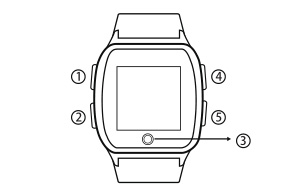

HT-990老人智能手表使用手冊
按键及接口说明

① 报时/微聊功能键
报时功能：短按此键，进入语音报时功能。
微聊功能：长按此键，直接进入微聊界面，再长按该键。
可开始录音，松开后即可发送语音给APP使用者。
② 开关机/SOS/电话接听键
开启或关闭电源：长按此键，可以开启电源，在网络接收不稳或手表未被绑定的情况下长按此键则关机，正常状态下，长按此键六秒以上,即可以强制关机。
SOS求救：手表开机后，在网络接收稳定及手表已绑定的情况下，长按此键三秒，即可执行SOS报警功能。
接听来电：当手表显示来电通知时，短按此键以接听电话。
③ Home键/返回键（触控按键）
选择功能后，轻触此键可返回主页面。
④ 音量调节快捷键/上翻键/快速拨号键
音量调节快捷键：当手表处于主界面时，短按此键，直接进入音量大小调节功能界面，此时再次短按此键可加大手表整体音量。
往上翻页键：手表处于电话簿界面时，短按此键，可翻页到上一个电话簿联络人。
快速拨号键：当手表在主界面时，长按此键，可直接拨打电话给电话簿的第一位联络人。
⑤ 音量调节键/下翻键/快速拨号键
音量调节键：当手表在音量大小调节界面时，短按此键可调低音量。
往下翻页键：当手表在电话簿界面时，短按此键，可翻页到下一个电话簿联络人。
快速拨号键：当手表在主界面时，长按此键，直接拨打电话给电话簿的第二位联络人。
绑定设备
步骤一：本手表只支持GSM网络，请使用标准的Nano-SIM卡。卸下手表后盖上的SIM卡盖，再放上Nano-SIM卡，正确安装完成后，长按开关机键开机。
步骤二：开启已下载APP，按照APP的指引注册新的用户或登录已有账号，成功登录后选择需要绑定的设备型号 —「老人手表」
步骤三：成功选择「老人手表」后，请扫描手表后盖上的二维码或手动输入设备的ID号进行绑定。
步骤四：绑定后即可通过APP对手表进行相关的设置。
功能及使用说明介绍
1.实时位置查询：通过APP点击「首页」可以实时查看手表的当前位置。
2.手表时间设置：在APP设置项选择「手表时区和语言」，选择所在地的对应时区，再提交即可成功设置。
3.电话簿：在APP的电话簿设置中添加最多10位电话联络人，成功保存后，手表的电话簿会自动同步更新，手表会默认电话簿中的前3位为SOS紧急联络人。
4.SOS：长按开关机/SOS键三秒后，手表即启动SOS报警功能，当无人接听电话时，手表会循环两轮拨打求救电话给3位紧急联络人；若其中一位联络人接听后则停止循环拨打；除了拨打电话外，手表会同时发送求助短讯给3位紧急联络人，以便让手表使用者快速获得援助。
5.通话：当手表进入电话簿界面，选择联络人后，点击屏幕上「拨打」图案，电话拨出并接通后，便可进行双向通话。
6.来电防火墙：没有在APP内设置的电话号码无法拨入手表进行通话。
7.吃药提醒：通过APP可以给手表设置三组不同的吃药提醒时间。
8.运动与健康监测：提供计步功能、久坐提醒功能、运动提醒和心率检测功能。
9.微聊：通过APP，可以给手表发送文字或语音讯息，手表则只可发送语音到APP。
10.手表语言设置：在APP设置项选取「手表时区和语言」，在语言项列表中选择所需语言并提交即可。
11.手表另外提供音量大小调节等；通过APP，还可以对手表进行免打扰时间设置、情景模式设置、电子围栏设置、手表闹铃设置、找手表、远程关机、历史轨迹查询等功能操作。
APN设置
如果您的手表使用了标准的Nano- SIM卡，并开通了数据功能而且有足够的余额，绑定后手表仍然无法连接至手机APP，请通过APP设置手表的APN。（因每间电讯供应商的APN码不尽相同，请向手表SIM卡的电讯供应商查询相应的APN码）。
设置方法：开启APP→「我的」→「高级设置」→「APN设置」→输入SIM卡电话号码 →输入APN及相关参数 → 提交 → 发送短信。
注意事项：在设置APN参数前，请确保手表的GSM信号正常且使用APP的手机可正常发送短信给手表内的SIM卡（手表内的SIM卡需确保能够正常接收短信）。
充电介绍
请使用手表配备的专用充电线，手表支持使用主流手机充电器进行充电，为支持环保，未随机配置电源适配器，请选择您身边合适的手机充电器给产品充电即可。
配件
1.充电线
2.使用说明书
常见问题
1.为什么无法开机？
答：可能由于运输时间过长，电池耗尽电量导致，请连接充电器充电后会自动开机。
2.为什么无法为手表充电？
答：请确认充电线是否与机身接触良好。
3.为什么二维码扫描失败？
答：请调整手机摄像头与二维码之间的距离，或者在光线充足的地方再重新扫描。
4.每一台追踪手表，是否只能供一个帐户使用?
答：不是。第一个绑定追踪手表的帐户称为主帐户，主帐户最多可加入位三位成员（子帐户）监察追踪手表。子帐户需先于APP注册帐户，再由主帐户于APP「成员管理」授权子帐户。主帐户负责操控、管理、通讯和监察追踪手表，子帐户用作通讯和监察追踪手表，并没有操控和管理功能。
5.追踪手表可否在外国使用？
答：可以，需配合支援漫游功能SIM卡或转用支援当地2G网络的SIM卡。如手表未能接收当地网络讯号，请于Apps重新设定APN (Access Point Name)。
6.为何追踪手表有定位功能仍需要SIM卡?
答：追踪手表需要流动数据传送资料至卫星，所以需要电讯商提供流动数据服务。加上追踪手表有双向通话功能，亦需要电讯商提供流动通讯服务。
注意事项
1.此产品为非防水设计，使用时请注意防水。
2.请将产品远离火源、高温高热等极端环境。
3.本说明书中的产品图片只限用于操作指导，产品请以实物为准。
4.为了给您提供更好的服务，我司会不断升级和优化产品功能，如说明书所述内容与产品实际功能略有不同， 请以当前实物为准。
售后服务
请咨询当地的业务人员或者我司售后服务中心。
联系我们
有任何问题或建议，欢迎您随时联系我们。
中国大陆
官方微信：航通守护者
客服QQ:3106893070
服务热线：0755-8601 8738
中国香港
服务热线：+852-26273380
邮箱：cs-liteguardian@castelbeidou.com
海外
邮箱: sales@castelbds.com
公司网页:www.lite-guardian.com
服务热线:+8675586018742